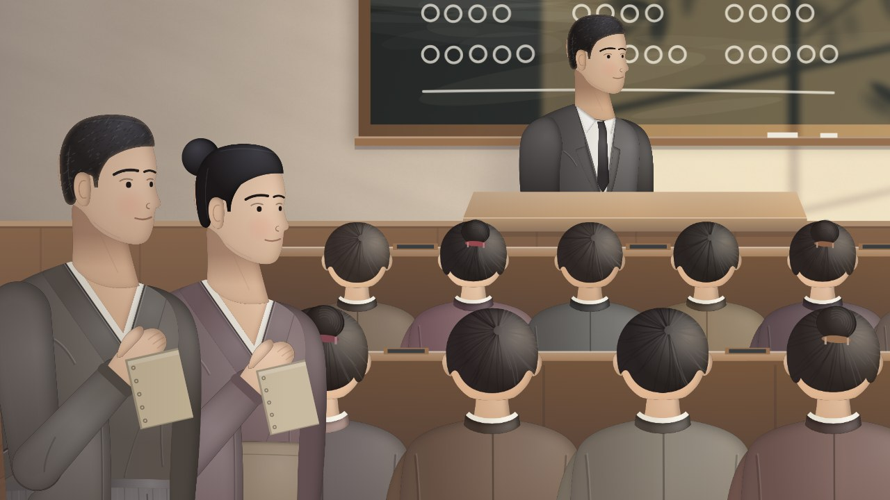

← Anterior · Película 2 de 4
Mide el trabajo, no a las personas
El equipo de Helena lee sus medidas en conjunto, pregunta qué frenó el trabajo, nunca quién, y arregla el sistema.
Temas › Liderar equipos de datos › Responsabilidad y desempeño
En 2027 el equipo de datos de la universidad pasa sus informes a la plataforma y gana velocidad. Tomás Ortega, que hizo casi todos los informes antiguos, se acelera menos y de forma desigual. Antes de juzgar, Helena pregunta qué le estorba, lo despeja y mide su brecha contra el cambio del equipo.
Borrador · El autor aún no lo ha revisado, así que algunos detalles pueden cambiar.
Pausa para pensar está activada: la película se detiene con una pregunta al final de los capítulos.

Descargar el video (en inglés)Archivos de subtítulosLeer el guion (en inglés)
¿Y ahora?
Las tres preguntas de Pausa para pensar, para una clase o un equipo. Abre una para ver la respuesta.
La película nombra cada idea una vez. Estas páginas van más allá. Revisadas el 10 de noviembre de 2026.
Película 3 de 4.
← Anterior · Película 2 de 4
El equipo de Helena lee sus medidas en conjunto, pregunta qué frenó el trabajo, nunca quién, y arregla el sistema.

Siguiente · Película 4 de 4 →
Ivy escribe sus objetivos, oye cada martes lo que cambió su trabajo, y crece hasta ser dueña de un producto.